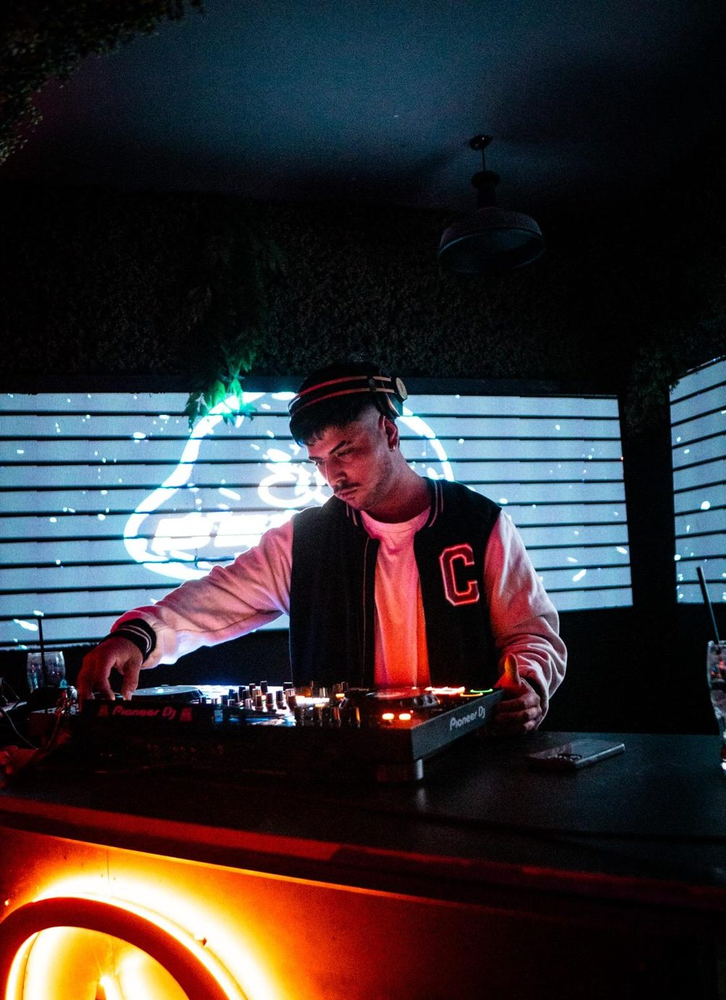
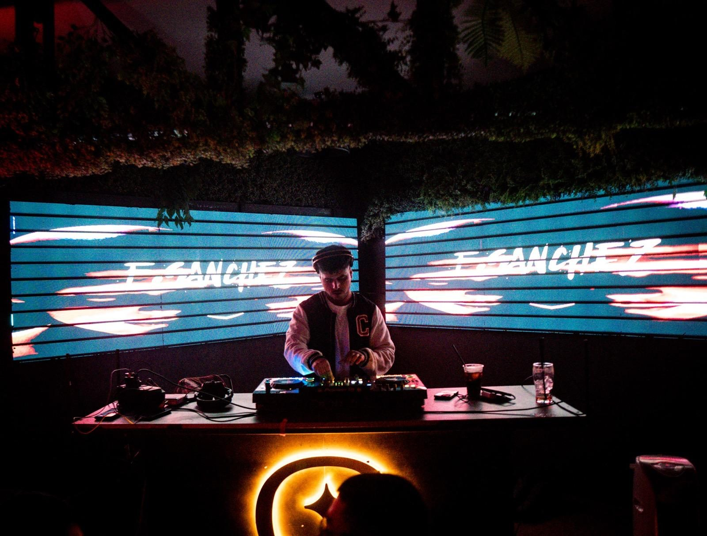
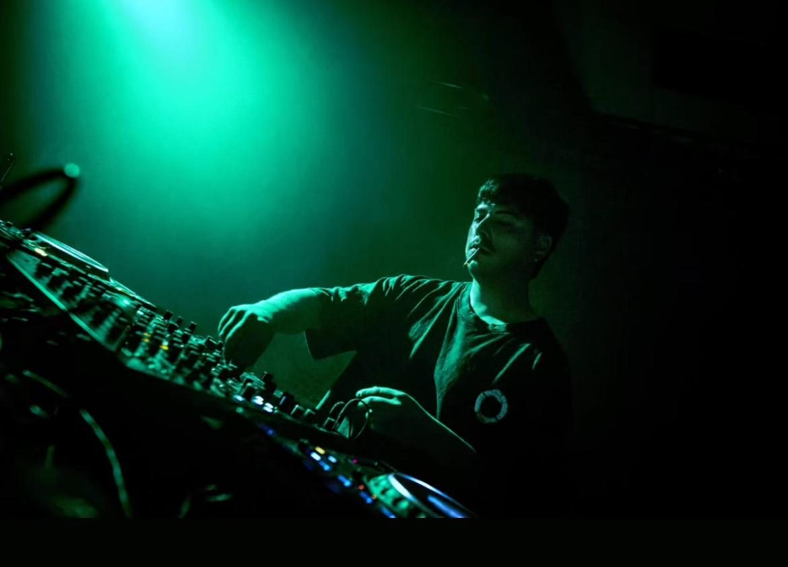
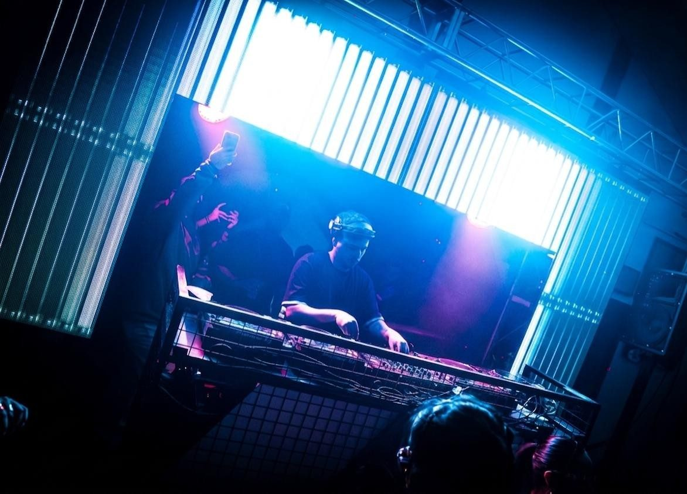
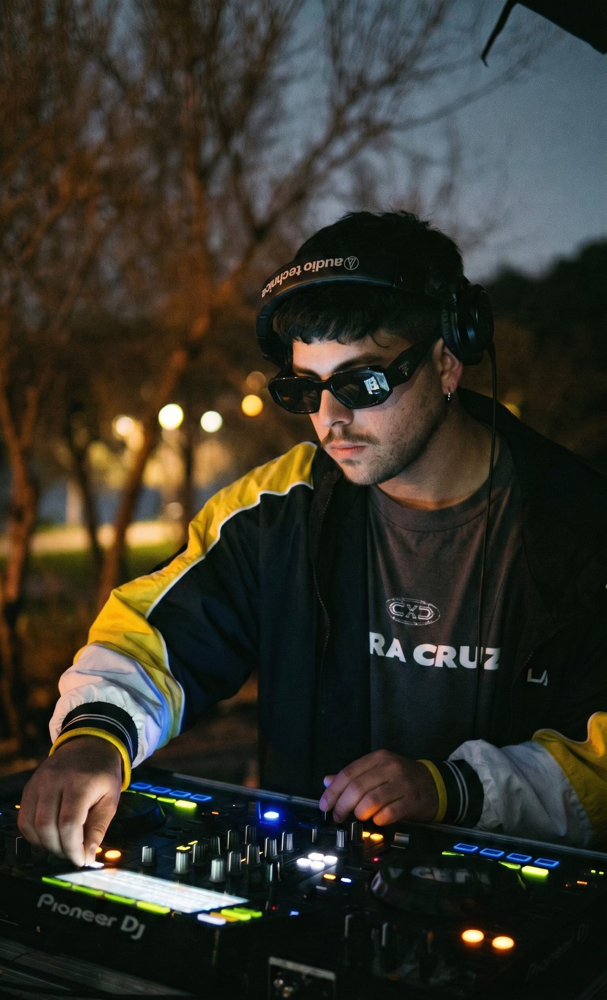

Franco Sánchez es un DJ de General Roca, con base en el Alto Valle, con un sonido centrado en el Indie Dance oscuro, groove pesado y drops bien marcados.
También incursiona en el Progressive House y el Melodic Techno, aunque su identidad se apoya principalmente en ritmos oscuros, sonidos profundos y una fuerte presencia del groove.
Ha sumado experiencias en clubes del Alto Valle y presentaciones como invitado, además de experiencias en Buenos Aires Capital. Ha trabajado junto a productoras como Black Beat, Natural Swing, B2B Sessions y One More, y ha compartido cabina con artistas como Martin Angrissano, Caitto, Gueva, Mayro y Nicolás Van Orton.
Su propuesta busca un balance entre groove, energía y una estética underground, consolidando una identidad propia dentro de la escena regional.

Sets y producciones de Franco, directo desde su perfil.
Franco Sánchez en SoundCloud Escuchá todos sus sets y temas. Abrir perfilFranco en cabina. Tocá el video para reproducirlo.
Sus sets y producciones, subidos por las productoras con las que trabajó.
En cabina.




Fechas, colaboraciones y prensa.
fsanchezbooking@gmail.com